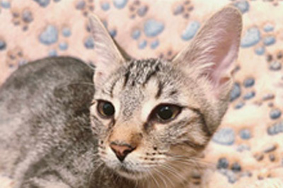
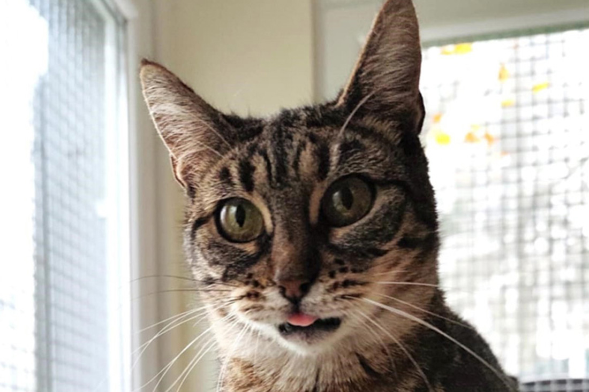
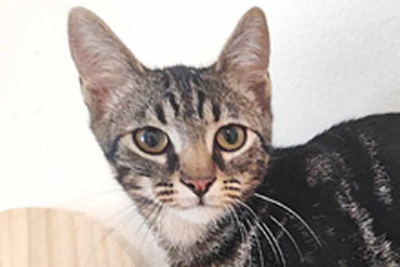
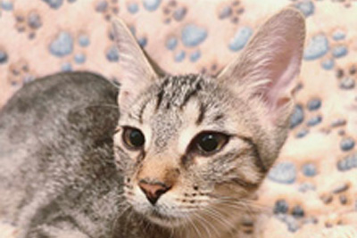
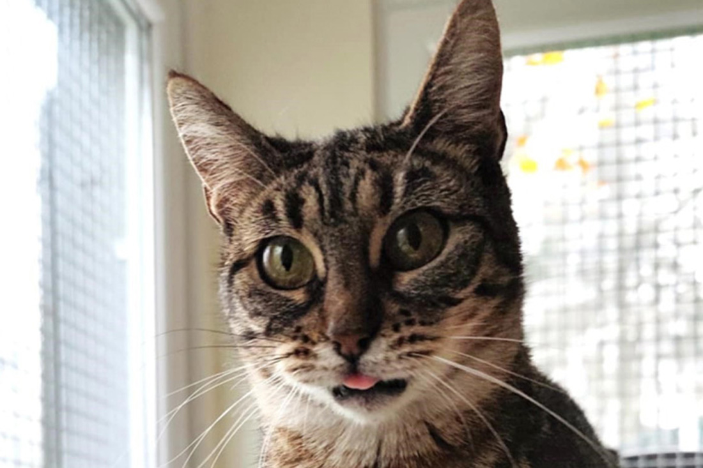
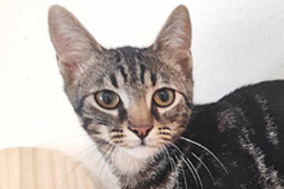
 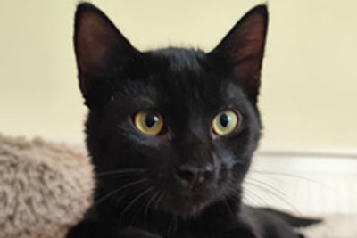
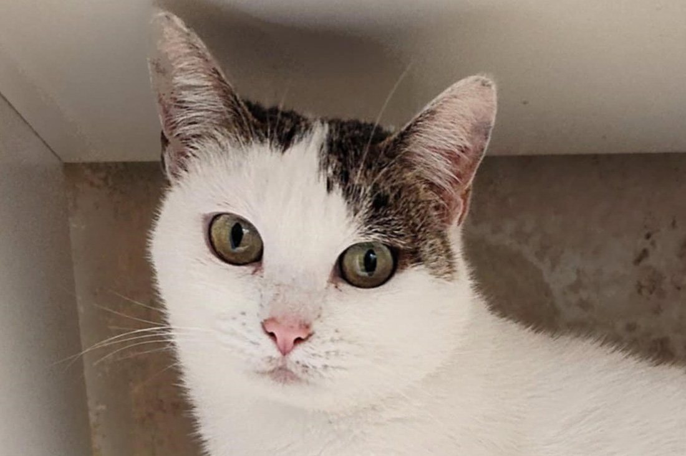
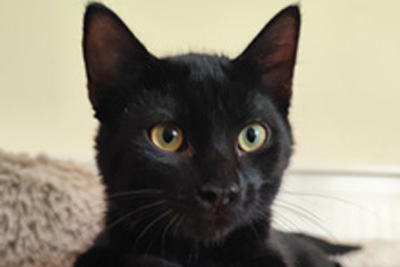
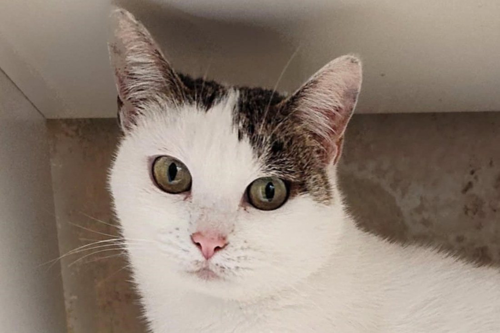

Paws & Whiskers Adoption Center is a dedicated sanctuary for cats of all ages, providing them with a safe and loving environment until they find their forever homes. Our mission is to rescue abandoned, stray, and surrendered cats, offering them medical care, socialization, and the affection they deserve. We believe that every cat, regardless of its background, deserves a second chance at happiness, and we work tirelessly to make that happen.
Beyond finding homes for our feline friends, we strive to educate the community about responsible pet ownership. From proper nutrition and healthcare to understanding feline behavior, we provide resources to ensure our adopters are well-prepared for a lifelong commitment. We also advocate for spaying and neutering to reduce overpopulation and help prevent future cases of homelessness.
At Paws & Whiskers, we go beyond just adoptions—we create a welcoming space where people and cats can bond. Our cozy "Meet & Greet" lounge allows potential adopters to spend quality time with our cats before making a decision. We also host events, workshops, and volunteer programs to bring cat lovers together. Whether you're looking to adopt, volunteer, or simply spend time with cats, our doors are always open to those who share our love for these wonderful animals.
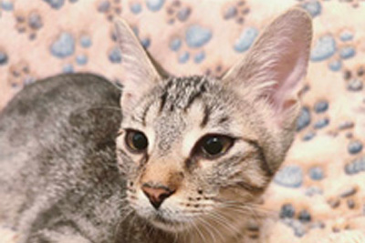
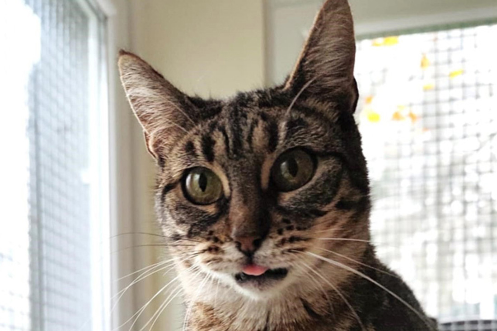
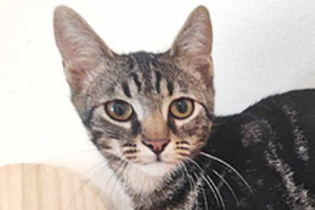
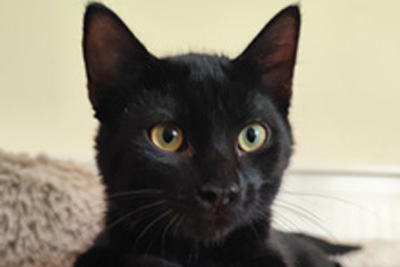
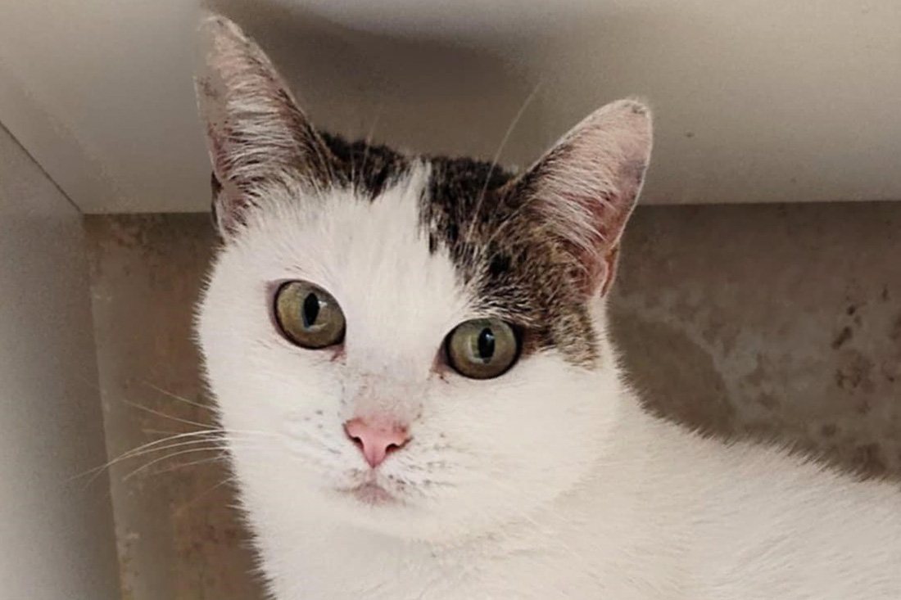